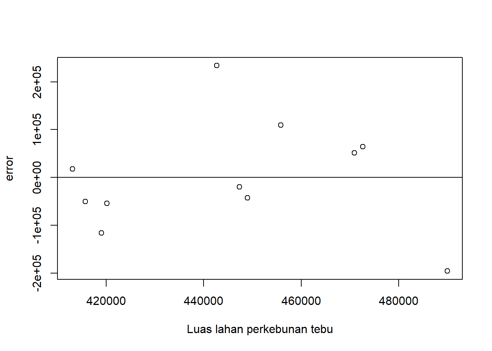
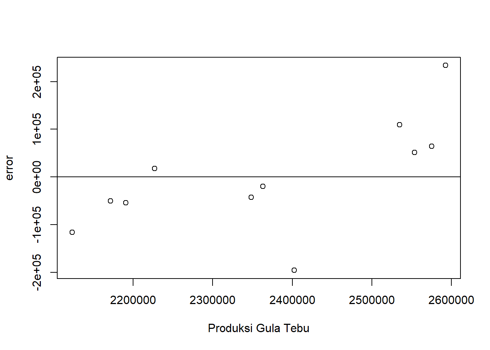

library(readxl)Analisis Regresi Pengaruh Luas Lahan Perkebunan Tebu Terhadap Produksi Gula Tebu Pada Periode 2012-2022
Metode Penelitian Politeknik APP Jakarta
.jpg)
1 Pendahuluan
1.1 Latar belakang
Beberapa wilayah di Indonesia mengandalkan roda perekonomiannya pada sektor hasil perkebunan dan pertanian, salah satunya adalah hasil perkebunan tebu. Tanaman tebu dapat menghasilkan berbagai macam produk yang memiliki nilai jual tinggi, contohnya gula tebu. Itu artinya industri produksi gula tebu menjadi salah satu aspek perekonomian serta berkontribusi terhadap ketahanan pangan serta kesejahteraan masyarakat. Oleh karena itu, penting untuk memahami faktor-faktor apa saja yang dapat mempengaruhi tingkat produksi gula tebu untuk memastikan keberlanjutan dan peningkatan produktivitas di sektor ini. Salah satu faktor yang dapat mempengaruhi produksi gula tebu adalah luas areal perkebunan tebu itu sendiri. Luas perkebunan tebu di suatu wilayah dapat berdampak signifikan terhadap produksi gula tebu. Hal ini menunjukkan bahwa Paper dengan judul “Analisis Regresi Pengaruh Luas Lahan Perkebunan Tebu terhadap Produksi Gula Tebu pada Periode 2012-2022” menjadi salah satu kajian yang relevan dan bermanfaat. Penulisan serta penelitian ini bertujuan untuk memberikan pemahaman yang lebih mendalam terkait hubungan antara luas lahan perkebunan dan produksi gula tebu.
1.2 Ruang lingkup
Penulisan paper penelitian ini mengkaji pengaruh luas lahan perkebunan tebu terhadap produksi gula tebu di Indonesia. Penelitian ini menggunakan data adari Badan Pusat Statistik (BPS). Ruang lingkup penelitian ini melibatkan 1 variable independent yaitu Luas Lahan Perkebunan Tebu. Adapun data yang dipakai adalah data yang sifatnya time series yaitu dalam periode 2012-2022.
1.3 Rumusan masalah
- Seperti apa hubungan antara luas lahan perkebunan tebu dengan produksi gula tebu selama periode 2012-2022
- Bagaimana Luas lahan perkebunan tebu bisa mempengaruhi produksi gula tebu?
1.4 Tujuan dan manfaat penelitian
penelitian ini bertujuan untuk menganalisis hubungan antara luas lahan perkebunan tebu dengan produksi gula tebu serta mengetahui alasan mengapa luas lahan perkebunan dapat mempengaruhi produksi gula tebu. Selain itu, penelitian ini diharapkan dapat memberikan informasi yang lebih mendalam tentang salah satu faktor produksi gula tebu yaitu luas lahan perkebunan
1.5 Package
Packages yang digunakan antara lain sebagai berikut:
2 Studi pustaka
2.1 Perkebunan tebu Di Indonesia.
Tebu sudah menjadi tanaman budidaya di Indonesia sebelum zaman Kolonial belanda (Evizal, 2018). Tanaman tebu juga menjadi salah satu tanaman yang tanam paksa di nusantara di tahun 1830-1870. Sehingga memang dari dulu gula tebu asal Indonesia sudah diminati di kalangan internasional. Indoenesia pernah mengalami kejayaan dalam ekspor gula (Yusuf, Aulia, & Martadi, 2010). Namun jika dilihat dari data di situs trade map, indoneisa lebhih banyak mengimpor gula dari pada mengekspor gula tebu
2.2 Tebu
Tanaman tebu yang memiliki nama latin Saccharum Officinarum L. menajdi salah satu tanaman budidaya perkebunan di indoensia yang memiliki nilai ekonomi yang tinggi (Anwar, Redjeki, & Budi, 2021). Tanaman tebu menjadi bahan baku utama dalam industry gula. Sementara itu, gula merupakan kebutuhan pokok bagi masyarakat indoensia (Anggraini & Hartatie, 2023) yang konsumsinya selalu meningkat dari tahun ketahun. Oleh karena itu petani tebu menjadi salah satu mata pencaharian masyarakat didaerah Indonesia khususnya daerah penghasil tebu seperti provinsi Jawa timus, lampung, jawa tengah, sumatera selatan, dan sebagainya (Direktorat Statistik Tanaman Pangan, 2022)
2.3 Produksi Gula Tebu
Kualitas gula tebu ditentukan oleh kandungan nira yang terdapat dalam tebu. Rendahnya nira tebu dapat mempengaruhi hasil produksi tinggi (Anwar, Redjeki, & Budi, 2021). Pada tahun 2017, produktivitas gula tebu lebih rendah dari pada negara pengahsil tebu lainnya seperti brazil, dan india. Selain dipengaruhi oleh kandungan nira, kualitas tebu juga dipengaruhi oleh beberapa hal misalnya suhu dan luas lahan perkebunan tebu. Menurut WTO (World Trade Organization), gula menjadi salah satu komoditas khusus sebagai salah satu upaya mewujudkan ketahanan pangan di Indonesia (Pramudya & Pamungkas, 2022)
3 Metode penelitian
3.1 Data
Penelitian ini menggunakan data luas lahan perkebunan tebu dan produksi gula tebu di indonesia dari tahun 2012-2022, datanya sebagai berikut:
| Tahun | Luas Lahan Perkebunan Tebu (Ha) | Produksi Gula Tebu (Ton) |
|---|---|---|
| 2012 | 442658 | 2592561 |
| 2013 | 470941 | 2553551 |
| 2014 | 472676 | 2575392 |
| 2015 | 455819 | 2534872 |
| 2016 | 447350 | 2363042 |
| 2017 | 420146 | 2190979 |
| 2018 | 415663 | 2171726 |
| 2019 | 413054 | 2227051 |
| 2020 | 418996 | 2123405 |
| 2021 | 449008 | 2348331 |
| 2022 | 490008 | 2402648 |
setwd("C:/kusuma_hastuti")
library(readxl)
data_metopel <- read_excel("data_metopel.xlsx")
View(data_metopel)
reg1<-lm(Y~X,data = data_metopel)
data_metopel$u<-resid(reg1)
plot(data_metopel$X,data_metopel$u,xlab = "Luas lahan perkebunan tebu",ylab = "error")
abline(h=0)
Plot pengaruh error terhadap Luas Lahan Perkebunan Tebu
library(readxl)
data_metopel <- read_excel("data_metopel.xlsx")
View(data_metopel)
reg1<-lm(Y~X,data = data_metopel)
data_metopel$u<-resid(reg1)
plot(data_metopel$Y,data_metopel$u,xlab = "Produksi Gula Tebu",ylab = "error")
abline(h=0)
Plot pengaruh error terhadap Produksi gula tebu.
3.2 Metode analisis
Metode analisis yang dipilih untuk penelitian ini adalah regresi univariat yaitu model regresi yang terdiri dari satu variabel dependent yaitu Produksi gula tebu, dan satu variable independent yaitu luas lahan perkebunan tebu.
Penelitian ini bermaksud untuk mengkaji hubungan antara luas lahan perkebunan tebu (X) dengan produksi gula tebu (Y)
\[ y_{t}=\beta_0 + \beta_1 x_t+\mu_t \]
Dimana \(y_t\) adalah Y dan \(x_t\) dalah X.
4 Pembahasan
4.1 Pembahasan masalah
| Variable | Coefficient | Std.Error | t-value | Prob(.) |
|---|---|---|---|---|
| intercept | |
|
|
|
| X | |
|
|
|
| R squared | 0.566 | |||
| Adjusted R-Squared | 0.5177 | |||
| F-Statistic | 11.73 | |||
| Prob (F-Statistic) | 0.00756 |
Dari tabel diatas, maka jika dimaksukkan ke persamaan regresi akan menjadi seperti ini
Y = 1.194 + 5.059X
Luas Lahan perkebunan tebu memiliki hubungan positif dengan produksi gula tebu. Maka, setiap kenaikan luas lahan perkebunan tebu yang diandaikan sebesar 1% maka jumlah produksi gula tenu meningkat sebesar 5,059%. Namun, produksi gula tebu akan menurun 1.194% jika luas perkebunan tebu = 0
Besarnya koefisien R Squared yaitu 0.566 menggambarkan bahwa sebesar 56.6% variabel dependen dapat dijelaskan oleh model regresi. Sementara koefisien F-Statistic yang tinggi dan koefisien p-value yang kecil menggambarkan bahwa model secara keseluruhan memiliki kecenderungan yang signifikan. Oleh karena itu, dapat disimpulkan bahwa Luas lahan perkebunan tebu berpengaruh terhdap produksi gula tebu di indonesia
4.2 Analisis masalah
Hasil regresinya adalah
reg1<-lm(Y~X,data = data_metopel)
summary(reg1)
Call:
lm(formula = Y ~ X, data = data_metopel)
Residuals:
Min 1Q Median 3Q Max
-195670 -52199 -19472 58223 233783
Coefficients:
Estimate Std. Error t value Pr(>|t|)
(Intercept) 1.194e+05 6.584e+05 0.181 0.86010
X 5.059e+00 1.477e+00 3.426 0.00756 **
---
Signif. codes: 0 '***' 0.001 '**' 0.01 '*' 0.05 '.' 0.1 ' ' 1
Residual standard error: 121600 on 9 degrees of freedom
Multiple R-squared: 0.566, Adjusted R-squared: 0.5177
F-statistic: 11.73 on 1 and 9 DF, p-value: 0.00756Dari hasil regresi diatas, maka setiap kenaikan luas lahan perkebunan tebu yang diandaikan sebesar 1% maka jumlah produksi gula tenu meningkat sebesar 5,059%. Namun, produksi gula tebu akan menurun 1.194% jika luas perkebunan tebu = 0
5 Kesimpulan
Didasarkan pada penetian yang sudah dilakukan, maka dapat disimpulkan bahwa luas lahan perkebunan tebu berpengaruh terhadap produksi gula tebu. hal ini dikarenakan dengan adanya perluasan lahan perkebunan akan memperbanyak jumlah tanaman tebu yang di tanam yang nantinya akan dipanen dan menjadi bahan baku utama gula tebu.
6 Referensi
Anggraini, R., & Hartatie, D. (2023). Pengaruh Asal Bahan Tanam dan Macam Varietas tebu (Saccarum officinarum. L) terhadap Pertumbuhan Vegetatif Bibit pada Portray . Agropross National Conference Procceedings of Agriculture , 2-2.
Anwar, K., Redjeki, E. S., & Budi, S. (2021). Perbedaan Pertumbuhan dan Hasil Tiga Klon Tanaman Tebu (Saccharum officinarum L.) Pada Tanah Aluvial di Didesa Sambiroto Kecamatan Sooko-Mojokerto. Jurnal Tropocrops, 2-2.
Direktorat Statistik Tanaman Pangan, H. d. (2022). Statistik Tebu Indoneisa 2022. BPS RI/BPS - Statistics Indonesia.
Evizal, R. (2018). Pengelolaan Perkebunan Tebu. Yogyakarta: GRAHA ILMU.
Pramudya, Y., & Pamungkas, S. S. (2022). Studi Respon Cekaman Garam Terhadap Kondisi Tanaman Tebu (Saccharum Officinarum). Open Science and Technology, 2-3.
Yusuf, Y., Aulia, A. F., & Martadi, S. (2010). Permintaan Gula Pasit di Indonesia. Jurnal Ekonomi, 1-1.